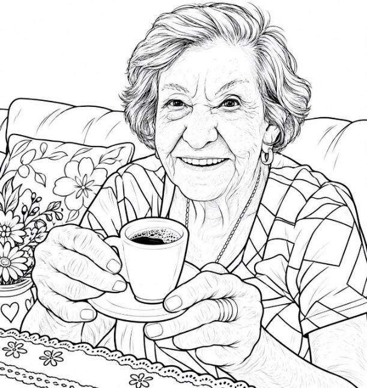

O café Coado de Zelinda
"Forte, com um pouquinho de açúcar e, desta vez, sem alho."
Se o café com alho ficou conhecido como uma travessura da juventude, o café coado de Dona Zelinda faz parte de sua rotina. Forte, passado na hora e adoçado com um pouquinho de açúcar, ele está presente nas manhãs e nas tardes.
A receita é simples: café forte, um pouquinho de açúcar e alguém para dividir a xícara. Desta vez, sem alho!
Ingredientes e Proporção Básica
(para 1 xícara de 180ml a 200ml)
Pó de café: 2 colheres de sopa (cerca de 10g a 15g)
Água: 200ml a 250ml de água filtrada
Opcional: Açúcar ou adoce apenas na xícara
Modo de preparo
- Prepare o coador. Passe água quente no coador de pano antes de usar. Isso tira o gosto de pano guardado e aquece o bule.
- Aqueça a água. Leve a água ao fogo e desligue quando começarem a subir as primeiras bolhinhas, antes de ferver forte. Água fervendo demais queima o pó e amarga o café.
- Coloque o pó. Ponha o pó no coador, já encaixado sobre o bule ou a garrafa.
- Passe o café. Despeje um pouco de água sobre o pó, só para molhar, e espere alguns segundos até o pó “estufar”. Depois despeje o restante aos poucos, em movimentos circulares, sem encher o coador até a boca.
- Sirva na hora. Adoce na xícara, com um pouquinho de açúcar, do jeito da Zelinda.
Segredo da Zelinda: coador de pano não se lava com sabão, só com água corrente. Depois de usados, guarde-o úmido num pote com água na
geladeira para não pegar cheiro. E coador novo fica melhor se for fervido antes com um pouco de pó de café.
